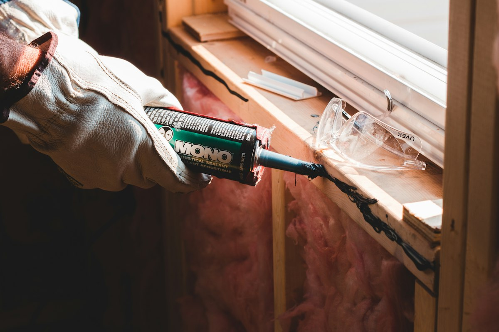

Ga je verbouwen, komt er een nieuwe keuken of wil je die loshangende snoeren strak in de muur weggewerkt hebben? Wij frezen professioneel en stofarm met professionele diamantfrezen en industriële stofafzuiging.

De kosten voor het frezen van sleuven hangen af van de hardheid van de muur. Al onze prijzen zijn inclusief btw en stofarm frezen met diamantgereedschap:
Licht en relatief zacht materiaal. Snelle verwerking met minimale trillingen voor binnenmuren.
Zachte tot middelharde steensoorten. Wordt strak en stofarm ingeslepen voor flexbuis of installatiebuis.
Massief beton vraagt zwaardere diamantbladen, hoog vermogen en intensievere bewerking.
Opmerking: Binnen Utrecht rekenen we € 0,- voorrijkosten. Het dichtmaken (afsmeren of stucen) van de gemaakte sleuven is niet inbegrepen in deze meterprijs (kan in overleg worden meegenomen).
Compleet verzorgd: inclusief frezen van de sleuf, trekken van nieuwe VD-bedrading, inbouwdoos plaatsen en monteren van het schakelmateriaal.
Ideaal voor het omhoog of opzij verplaatsen van een stopcontact (bijvoorbeeld achter een hangende tv of naar een nieuw nachtkastje).
Wanneer een stopcontact vanaf een centraaldoos of verdere muur moet worden aangelegd (bijvoorbeeld bij complete keuken- of kamerverbouwingen).
Wil je spatwaterdichte stopcontacten voor de badkamer/buiten, of stopcontacten met ingebouwde USB-A/C snellader? Dezelfde scherpe basistarieven.